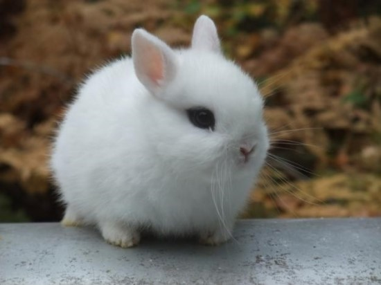
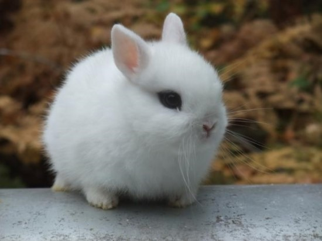

HTML 연습
토끼의 종류
집토끼
- 구멍을 파기 때문에 앞다리가 짧다. 일종인 유럽 집토끼에서 현재 사육되고 있는 토끼가 만들어졌다.
- 집단생활을 한다.
산토끼
- 집토끼에 비해 전지가 약간 길다.
- 단독생활을 한다.
굴토끼
- 유럽토끼의 한 종이다.
- 일찍부터 사육되어서 집토끼가 되었다.
솜꼬리토끼
- 솜꼬리토끼속(Sylvilagus)에 속하는 토끼의 총칭이다.
- 모두 16종으로 아메리카에서 발견되었다.
 


토끼의 먹이
- 물
- 섬유질
- 건초
- 요트구르
- 파인애플,파파야
- 야채
- 단백질
- 비타민 미네랄 보조제
- 탄수화물, 당분
- 야생꼴, 들풀
주인 좋아하는, 애완토끼가 보내는 신호 6가지
- 혀로 핥아준다.
- 래빗 키스(Rabbit Kiss)라고 부르는 이 행동은 토끼가 주인을 사랑할 때 하는 행동이다.
- 머리를 만져주면 귀를 몸쪽으로 붙인다.
- 대부분 애완 토끼는 머리를 만져주는 것을 좋아한다.
주인이 머리를 만져줄 때 귀를 몸쪽으로 바짝 붙일 때가 있다.
이 행동은 주인이 나를 예뻐해 줘서 너무 편안하고 행복하다는 의미를 담고 있다. 주인이 좋을 때만 보여주는 행동이다.
- 주인을 괴롭히는 사람이 있으면 으르렁 소리를 낸다.
- 사랑하는 주인을 괴롭히는 사람이 있으면 토끼는 '으르렁' 소리를 내면서 달려든다. 토끼 이빨에 물리면 피가 날 수도 있다.
- 주인이 외출하려고 하면 따라나선다.
- 많은 사람이 애완 토끼는 외로움을 타지 않는다고 생각한다.
토끼는 타고난 성격이 독립적이긴 하지만 사람과 오랜 시간 보낸 애완 토끼들은 외로움을 타기도 한다.
특히, 주인과 많은 시간을 함께 있는 토끼는 주인이 밖으로 나가려고 하면 따라나선다.
이 행동은 토끼가 주인에게 보여주는 애정표현이기도 하다.
- 만져달라고 계속 손 쪽으로 머리를 가져다 댄다.
- 토끼는 좋아하는 주인에게는 머리와 볼을 망설임 없이 내준다.
만져달라고 주인 손 쪽으로 머리를 들이미는 토끼도 있다. 토끼가 주인을 좋아하지 않으면 하지 않는 행동이다.
- 옆에서 잠을 잔다.
- 야생 토끼의 경우 야행성이 많지만, 집에서 사는 토끼는 주인과 같은 시간에 잔다.
주인을 좋아하는 토끼는 주인이 잠드는 시간에 맞춰 주인 옆에서 잠을 잔다.
| 이름 |
나이 |
성별 |
학번 |
주소 |
| 서영 |
21 |
여 |
19 |
안양 |
| 윤진 |
22 |
여 |
19 |
노원 |
| 혜린 |
21 |
여 |
19 |
분당 |
| 지수 |
21 |
여 |
19 |
안양 |